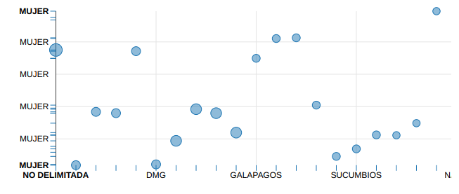
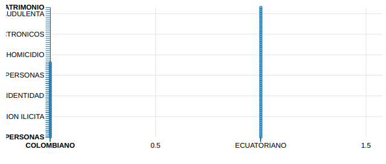
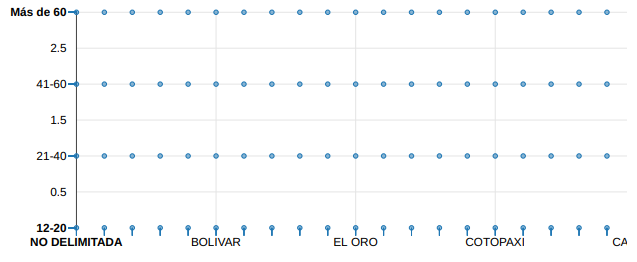
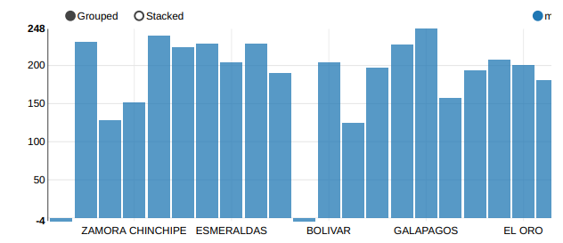
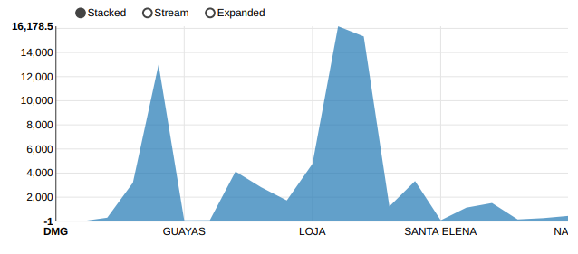

Análisis de los datos
El proceso de análisis de datos comprende varias etapas cruciales, desde la recopilación
inicial
hasta la limpieza, transformación, modelado y análisis efectivo. Cada una de estas etapas no
solo requiere el uso de herramientas y técnicas especializadas, sino también un enfoque
metódico y estructurado para asegurar la calidad y la relevancia de los resultados
obtenidos.
Limpieza de los datos
La limpieza de datos es un paso crítico y
fundamental para garantizar la calidad y la integridad de los datos utilizados en
cualquier
proyecto. Este proceso implica la identificación y corrección de errores, la eliminación
de datos duplicados o irrelevantes, y la garantía de que los datos sean consistentes y
estén
completos. En nuestro proyecto, que abarca la recopilación y análisis de datos de
detenidos
desde 2016 hasta 2024, la limpieza de datos es esencial para obtener resultados precisos
y
fiables.
limpieza del Canton
Para limpiar los datos de cantones y provincias, hemos utilizado expresiones regulares. Una
expresión regular es una secuencia de caracteres que define un patrón de búsqueda,
permitiéndonos identificar y manipular cadenas de texto que contienen ciertos caracteres
específicos. Esto nos ha facilitado la tarea de encontrar coincidencias en los datos y
asegurar
que estén en el formato adecuado.
La expresión regular \w*[^\x00-\x7FáéíóúÁÉÍÓÚñÑüÜ]+\w* es un patrón que busca
coincidencias en cadenas de texto que contengan ciertos caracteres específicos. Aquí te
explico
cada parte de la expresión:
\w*: Esto coincide con cero o más caracteres de palabra. Los caracteres de
palabra incluyen letras (mayúsculas y minúsculas), dígitos y guiones bajos (_).
[^\x00-\x7FáéíóúÁÉÍÓÚñÑüÜ]+: Esta parte define un conjunto negado ([^…])
que
busca cualquier carácter que no esté en el rango de caracteres especificado. Aquí tenemos
dos
rangos:
\x00-\x7F: Representa todos los caracteres ASCII estándar, es decir, los
caracteres con códigos hexadecimales desde 00 hasta 7F. Esto cubre la mayoría de los
caracteres
básicos del inglés y otros idiomas.
Aquí tienes el código que utilizamos para filtrar los datos:
Este código en Spark filtra y organiza los datos de la columna nombre_canton en
un
DataFrame. Selecciona solo los nombres que contienen caracteres permitidos (alfanuméricos,
espacios y letras con acentos), elimina duplicados, y luego ordena los resultados
alfabéticamente para mostrarlos.
Descripción de los datos complementarios
| Nombre del dato |
Descripción |
Tipo de dato |
| media_tasa_educacionbasica_poblacion |
Promedio de la tasa de población que ha completado la educación básica. |
FLOAT |
| media_tasa_educacionbachillerato_poblacion |
Promedio de la tasa de población que ha completado el bachillerato. |
FLOAT |
| media_tasa_empleo_inadecuado |
Promedio de la tasa de empleo inadecuado (trabajos que no cumplen con las
condiciones
mínimas). |
FLOAT |
| media_tasa_pobreza_extrema |
Promedio de la tasa de población que vive en condiciones de pobreza extrema. |
FLOAT |
| media_indice_dh |
Promedio del índice de desarrollo humano (DH). |
FLOAT |
| media_tasa_narcotrafico |
Promedio de los kilogramos de narcóticos incautados. |
FLOAT |
Consulta sobre los Datos
Consulta 1
¿Cuáles son las detenciones de mujeres, incluyendo la provincia, la tasa media de pobreza
extrema
y el tipo de infracción, agrupadas y ordenadas por la cantidad de infracciones?
La consulta SQL selecciona y agrupa datos sobre detenciones de mujeres, incluyendo la
provincia,
la tasa media de pobreza extrema en esa provincia, el tipo de infracción cometida y la
cantidad
de veces que ocurrió cada infracción. Para lograr esto, se crean varias uniones (JOIN) entre
las
tablas “detenido”, “subcircuito”, “circuito”, “distrito”, “zona” y “provincia”, además de
una
subconsulta para enumerar diferentes infracciones. Los resultados se agrupan por provincia,
tasa
de pobreza extrema y tipo de infracción para incluir solo a mujeres detenidas. Finalmente,
los
datos se ordenan de manera descendente de acuerdo con la cantidad de infracciones.

Consulta 2
¿Cuáles son las detenciones organizadas según la
nacionalidad (‘COLOMBIANO’, ‘VENEZOLANO’,
‘ECUATORIANO’), el tipo de infracción, el porcentaje de
prevalencia de cada infracción y la edad media de los
detenidos?
La consulta SQL elige y organiza los datos de las detenciones según la nacionalidad y el tipo
de
infracción cometida. Se establece el porcentaje de prevalencia de cada tipo de infracción y
la
edad
media de los detenidos para cada nacionalidad (‘COLOMBIANO’, ‘VENEZOLANO’ y ‘ECUATORIANO’).
La consulta une las tablas “detención”, “detenido” y “nacionalidad”, filtra los resultados
para
esas
nacionalidades y organiza los datos según la nacionalidad y el tipo de infracción. Además,
determina
el porcentaje de incidencia de cada tipo de infracción en relación con el total de
detenciones
para
esas nacionalidades y la edad promedio de los detenidos. Finalmente, los resultados se
ordenan
de
manera descendente por nacionalidad y luego por porcentaje de incidencia.

Consulta 3
¿Cuál es la distribución de detenciones de hombres por
rango de edad en cada provincia, qué arma es la más
común en cada subcircuito, y cómo se relacionan estos
datos con la tasa de narcotráfico, lo que podría ayudar a
entender mejor el contexto de la violencia y el crimen en
diferentes regiones?
Esta consulta SQL agrupa y analiza los datos de detenciones de hombres en varias provincias y
los
clasifica por edad y sexo. Cada subcircuito recibe información sobre la provincia, la tasa
de
tráfico de
drogas y el arma más utilizada. Luego se cuentan las detenciones en cada grupo, lo que
proporciona
una visión detallada de cómo las tasas de narcotráfico se relacionan con las detenciones de
hombres,
diferenciadas por rangos de edad y tipos de armas en diferentes provincias. Para facilitar
la
interpretación, la consulta ordena los resultados por rangos de edad.

Consulta 4
¿Qué patrones se pueden identificar en la detención de
hombres por rango de edad en cada provincia, cómo se
relacionan estos patrones con la tasa de empleo
inadecuado y la tasa de narcotráfico, y qué subinfracción
es la más común, lo que puede ayudar a comprender
mejor las dinámicas sociales y delictivas en cada región?
Esta consulta SQL agrupa y analiza datos de detenciones de hombres en diversas provincias,
clasificando por rango de edad y sexo. Se extrae la provincia, la tasa media de empleo
inadecuado, la
tasa de narcotráfico, y la subinfracción más común en cada subcircuito. Luego, se cuenta el
número
de detenciones en cada grupo, proporcionando una visión detallada de cómo las tasas de
empleo
inadecuado y narcotráfico se relacionan con las detenciones de hombres, diferenciadas por
rangos
de
edad y tipos de delitos en distintas provincias.

Consulta 5
¿Qué relación existe entre la tasa de narcotráfico, el nivel
educativo de la población y el número de detenciones
por microtráfico en cada provincia, y cómo puede esta
información ayudar a diseñar estrategias efectivas para
combatir el crimen relacionado con drogas?
Esta consulta SQL agrupa y analiza los datos de detenciones de drogas de diferentes provincias.
Encuentra el nombre de la provincia, la tasa media de consumo de drogas y la tasa media de
educación bachillerato de la población. Además, registra la cantidad de arrestos por
infracciones de
“SUSTANCIAS” o “MICROTRAFICO” en cada provincia. Los resultados se agrupan por provincia y sus
respectivas tasas, y se ordenan de forma descendente según el número de detenciones por drogas.
Esto proporciona una visión clara de la relación entre la incidencia del narcotráfico, el nivel
educativo
y las detenciones por drogas en cada provincia.

Conclusiones y resultados
Conclusión
El presente proyecto se ha centrado en unificar y analizar exhaustivamente múltiples fuentes de
datos sobre detenciones desde 2016 hasta 2024. A través de la aplicación de diversas
herramientas y tecnologías, se logró convertir, normalizar y unificar datos procedentes de
distintos años y formatos en una estructura coherente y analizable. Este proceso abarcó:
- Preparación y Conversión de Datos: Se utilizó csvkit para convertir hojas
de Excel a CSV y scripts de partición para manejar datos de múltiples años.
- Normalización de Esquemas: Se crearon y adaptaron esquemas específicos para
asegurar consistencia en las columnas a lo largo de los diferentes años.
- Procesamiento con Spark y Python: Se emplearon Spark y Scala para datos
iniciales, y Python con Pandas para datos más recientes, garantizando limpieza y
transformación de datos para compatibilidad.
- Uso del Formato Parquet: Se implementó Parquet para almacenamiento
eficiente y rápido acceso a los datos unificados.
- Diseño Conceptual y Lógico: Se desarrolló un Modelo Entidad-Relación (E-R)
transformado en un Modelo Relacional para estructurar la base de datos.
- Generación e Implementación del Script DDL: Se creó un script SQL para
implementar la base de datos en MySQL.
- Preparación y Carga de Datos: Se importaron datos base y complementarios en
la base de datos MySQL.
- Generación de un Archivo CSV: Se creó un archivo CSV con todas las
variables relevantes para análisis.
El resultado obtenido es una base de datos MySQL completamente implementada y cargada con los
datos finales, lista para análisis detallados. Esta base de datos facilitará la realización de
análisis de tendencias, geográficos, demográficos y de correlación, proporcionando valiosos
insights sobre las detenciones a lo largo de los años.